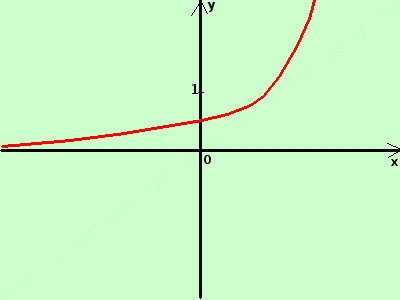

|
sviluppo Data la seguente funzione costruitene approssimativamente il grafico y = |ex-1|  considero la funzione senza modulo y = ex-1 e' la funzione esponenziale con l'esponente (argomento) diminuito di una unita' la funzione, rispetto ad y=ex e' spostata verso destra di una unita' essendo la funzione tutta sopra l'asse delle x coincide con il suo modulo y = |ex-1|= ex-1 Disegno la curva (in rosso) |